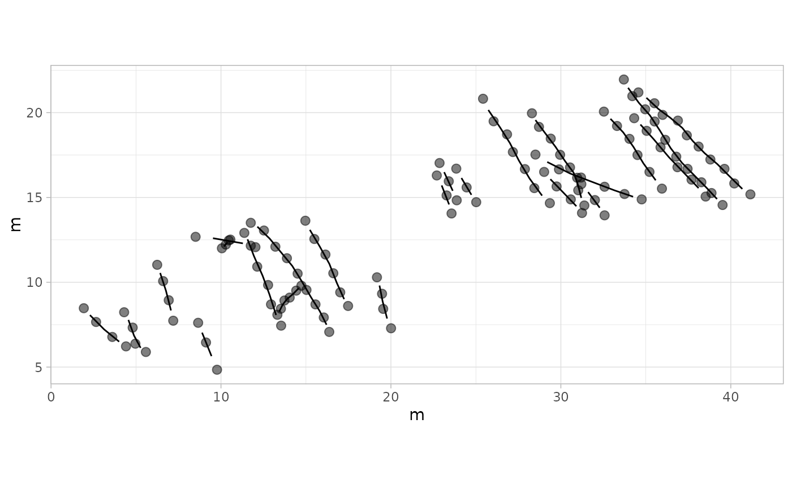
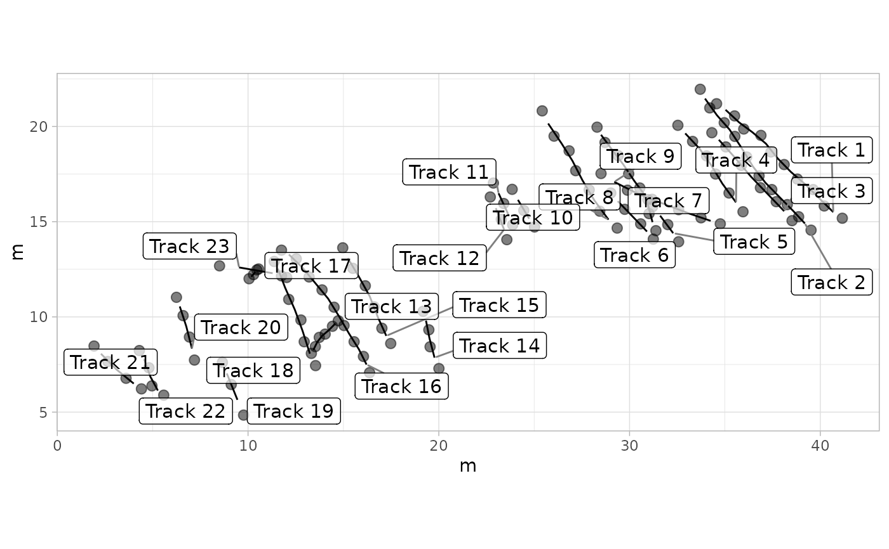
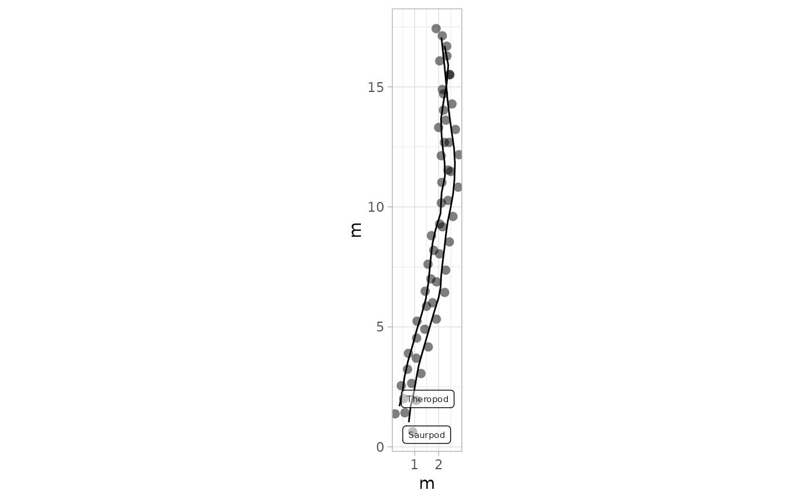

plot_track() visualizes track and footprint data in various ways, allowing for the plotting of trajectories, footprints, or both combined, with customizable aesthetics.
Usage
plot_track(
data,
plot = "FootprintsTracks",
colours = NULL,
cex.f = NULL,
shape.f = NULL,
alpha.f = NULL,
cex.t = NULL,
alpha.t = NULL,
plot.labels = NULL,
labels = NULL,
box.p = NULL,
cex.l = NULL,
alpha.l = NULL
)Arguments
- data
A
trackR object, which is a list consisting of two elements:Trajectories: A list of interpolated trajectories, where each trajectory is a series of midpoints between consecutive footprints.Footprints: A list of data frames containing footprint coordinates, metadata (e.g., image reference, ID), and a marker indicating whether the footprint is actual or inferred.
- plot
Type of plot to generate. Options are
"FootprintsTracks"(default),"Tracks", or"Footprints". Determines what elements are included in the plot.- colours
A vector of colors to be used for different tracks. If
NULL, defaults to black. The length of this vector should match the number of tracks in the data.- cex.f
The size of the footprint points. Default is
2.5.- shape.f
A vector of shapes to be used for footprints in different tracks. If
NULL, defaults to19(solid circle). The length of this vector should match the number of tracks in the data.- alpha.f
The transparency of the footprint points. Default is
0.5.- cex.t
The size of the track lines. Default is
0.5.- alpha.t
The transparency of the track lines. Default is
1.- plot.labels
Logical indicating whether to add labels to each track. Default is
FALSE.- labels
A vector of labels for each track. If
NULL, labels are automatically generated from track names.- box.p
Padding around label boxes, used only if
plot.labelsisTRUE. Adjusts the spacing around the label text.- cex.l
The size of the labels. Default is
3.88.- alpha.l
The transparency of the labels. Default is
0.5.
Value
A ggplot object that displays the specified plot type, including tracks, footprints, or both, from track R objects. The ggplot2 package is used for plotting.
Details
The plot_track() function is designed as a diagnostic and exploratory tool.
Its primary purpose is to display the raw spatial data (footprint coordinates and
interpolated track trajectories) that have been digitized, so that users can
visually confirm data integrity before conducting quantitative analyses. This
includes checking whether footprints are in the correct order, whether tracks are
oriented consistently, and whether interpolated trajectories align with the raw
footprint data.
Importantly, these plots are not intended to replace traditional ichnological illustrations. Hand-drawn maps and outlines often convey information that is not captured in raw coordinate plots, such as tridactyl morphology, manus/pes distinction, taxonomic attribution, or trackway orientation, and they frequently provide clearer and more communicative visual summaries of ichnological material.
By contrast, plot_track() focuses on plotting digitized data as they are,
without additional interpretation, stylization, or symbolic annotation. The goal is
to offer a reproducible, data-driven representation that complements, rather than
supplants, traditional methods. Users are encouraged to treat these plots as
quality-control visualizations that help detect potential errors or inconsistencies
in the raw data prior to downstream analyses, while continuing to rely on classical
ichnological illustrations for detailed morphological and taxonomic interpretation.
Author
Humberto G. Ferrón
humberto.ferron@uv.es
Macroevolution and Functional Morphology Research Group (www.macrofun.es)
Cavanilles Institute of Biodiversity and Evolutionary Biology
Calle Catedrático José Beltrán Martínez, nº 2
46980 Paterna - Valencia - Spain
Phone: +34 (9635) 44477
Examples
# Example 1: Basic Plot with Default Settings - MountTom Dataset
plot_track(MountTom)

# Example 2: Basic Plot with Default Settings - PaluxyRiver Dataset
plot_track(PaluxyRiver)
# Example 3: Plot Tracks Only - MountTom Dataset
plot_track(MountTom, plot = "Tracks")
# Example 4: Plot Footprints Only - PaluxyRiver Dataset
plot_track(PaluxyRiver, plot = "Footprints")
# Example 5: Custom Colors for Tracks - MountTom Dataset
custom_colors <- c(
"#008000", "#0000FF", "#FF0000", "#800080", "#FFA500", "#FFC0CB", "#FFFF00",
"#00FFFF", "#A52A2A", "#FF00FF", "#808080", "#000000", "#006400", "#00008B",
"#8B0000", "#FF8C00", "#008B8B", "#A9A9A9", "#000080", "#808000", "#800000",
"#008080", "#FFD700"
)
plot_track(MountTom, colours = custom_colors)
# Example 6: Larger Footprints and Track Lines - PaluxyRiver Dataset
plot_track(PaluxyRiver, cex.f = 5, cex.t = 2)
# Example 7: Semi-Transparent Footprints and Tracks - MountTom Dataset
plot_track(MountTom, alpha.f = 0.5, alpha.t = 0.5)
# Example 8: Different Shapes for Footprints - PaluxyRiver Dataset
plot_track(PaluxyRiver, shape.f = c(16, 17))
# Example 9: Plot with Labels for Tracks - MountTom Dataset
labels <- paste("Track", seq_along(MountTom[[1]]))
plot_track(MountTom, plot.labels = TRUE, labels = labels, cex.l = 4, box.p = 0.3, alpha.l = 0.7)

# Example 10: Custom Colors and Shapes for Footprints Only - PaluxyRiver Dataset
plot_track(PaluxyRiver, plot = "Footprints", colours = c("purple", "orange"), shape.f = c(15, 18))
# Example 11: Larger Line Size & Custom Colors for Tracks Only - MountTom Dataset
plot_track(MountTom, plot = "Tracks", cex.t = 1.5, colours = custom_colors)
# Example 12: Black Footprints and Tracks with Labels - PaluxyRiver Dataset
plot_track(PaluxyRiver,
colours = NULL, shape.f = c(16, 16), plot.labels = TRUE,
labels = c("Saurpod", "Theropod"), cex.l = 2, alpha.l = 0.5
)
